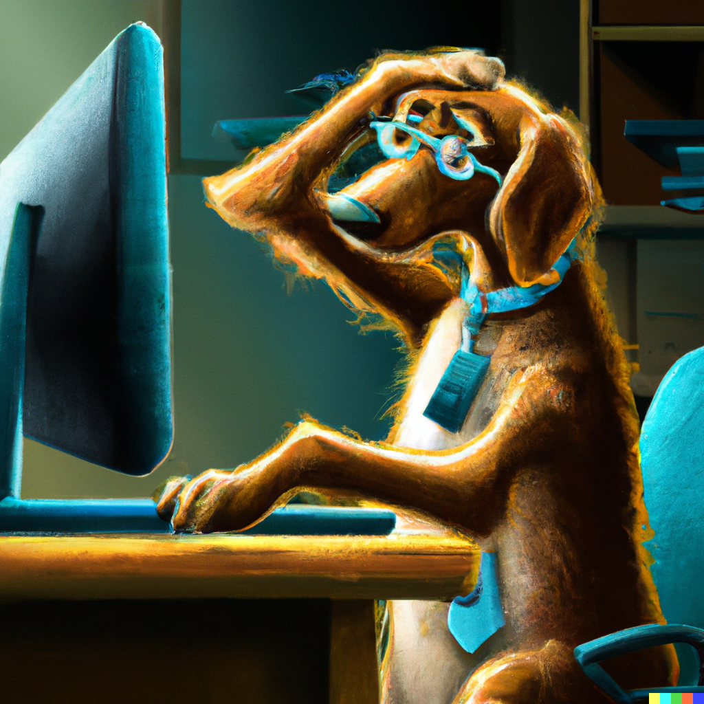

Voor domotica-oplossingen heb de software veelal zelf geschreven en kan die derhalve naar ieder gewenste situatie aanpassen. Echter de software consultancy betreft meestal PC software. Hoe werkt dat? is de veel gestelde vraag. Dat kunnen vragen voor Windows zijn maar ook Office, installatie anti-virus, NAS configuratie software, router instellingen of printer/scanners. Een vaak voorkomend probleem is het scannen door diverse gebruikers naar een directory op een NAS. Verder software instellingen voor de koppeling van andere randapparaten: monitoren, printer/scanners, satelliet ontvangers, NAS foto's laten zien op een smart TV, surveillance camera's etc. etc. Het is vaak niet heel moeilijk en derhalve vind ik het belangrijk de klant te leren hoe zelf te zoeken naar een oplossing.
